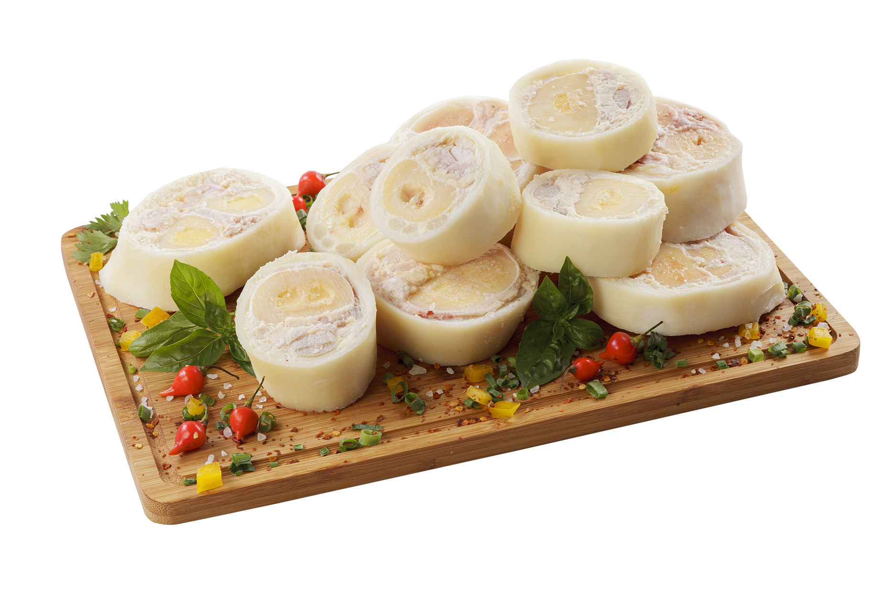

Mapa CarneCerta
Especial para cozimento longo e caldo
O mocotó é um corte tradicional, rico em sabor, muito valorizado em receitas de cozimento prolongado e caldos encorpados.

Ideal para • cozido • caldo • prato tradicional
Sabor
5/5
Intenso
Textura
3/5
Firme
Versatilidade
4/5
Alta
Abrir recomendador inteligente
Mocotó
Um corte de sabor profundo, muito usado em receitas tradicionais e em preparos de longa duração.
O mocotó é valorizado por sua coloração, textura forte e capacidade de entregar caldo encorpado e sabor marcante.
Caldo
Cozimento
Tradicional
4.7
Cozido tradicional
Ideal para quem aprecia pratos de cozimento longo, caldo rico e sabor muito característico.
Ideal para
Dica do açougueiro IA
Cozinhe por bastante tempo e use cebola, alho e temperos fortes para destacar o sabor do corte.